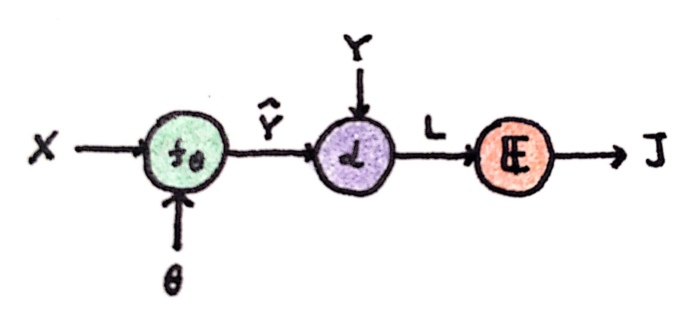
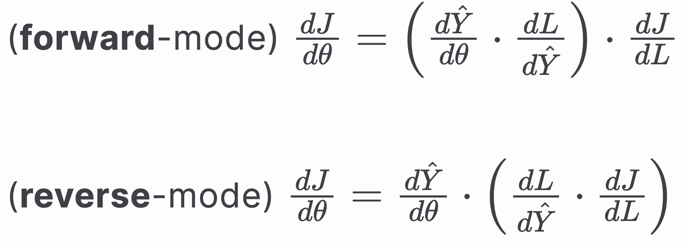
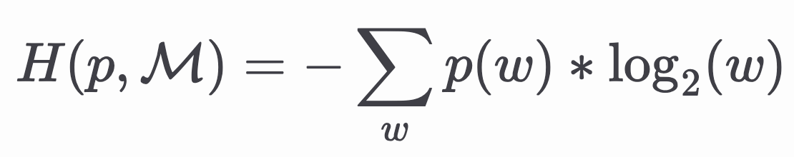
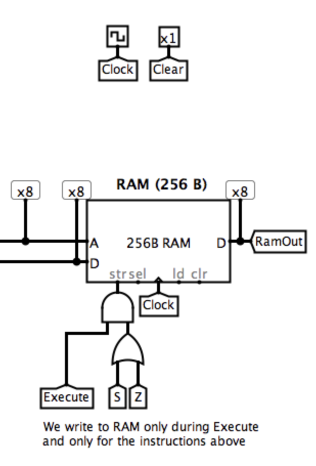

Projects
Personal projects and explorations
Automatic Differentiation
2019A proof of concept implementation of automatic differentiation from scratch, exploring the core concepts behind modern deep learning frameworks. Includes a detailed presentation explaining the mathematical foundations and implementation details.


Language Modeling
2018A talk covering language modeling approaches: statistical Markov models, neural Markov models, and RNNs/LSTMs. From the pre-transformers era, focusing on n-gram based methods.

8-bit Computer in Logisim
2016Built a simulation of an Unlimited Register Machine using logic gates in Logisim. Implemented both Harvard (separate ROM and RAM) and von Neumann (shared RAM) architectures, exploring fundamental computer architecture concepts from first principles.
